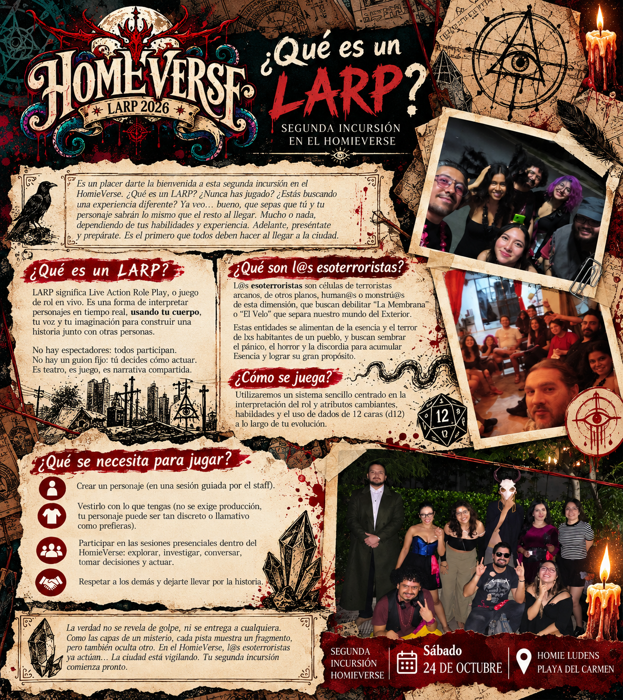
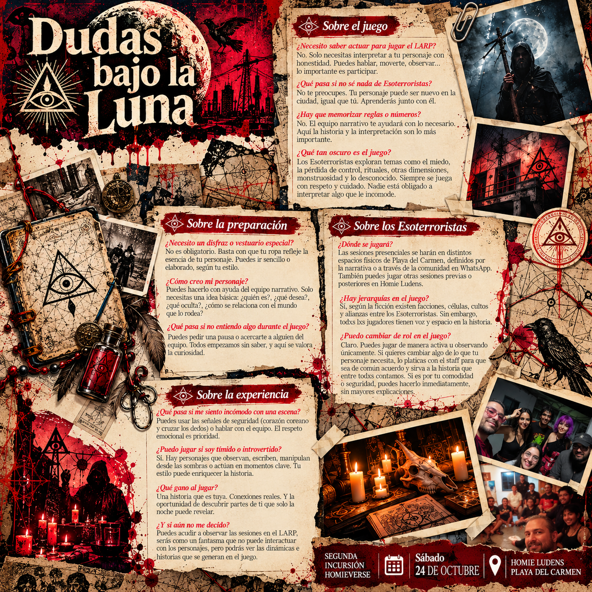

¿Qué es un LARP?
SEGUNDA INCURSIÓN EN EL HOMIEVERSE
Es un placer darte la bienvenida a esta segunda incursión en el HomieVerse. ¿Qué es un LARP? ¿Nunca has jugado? ¿Estás buscando una experiencia diferente? Ya veo… bueno, que sepas que tú y tu personaje sabrán lo mismo que el resto al llegar. Mucho o nada, dependiendo de tus habilidades y experiencia. Adelante, preséntate y prepárate. Es el primero que todos deben hacer al llegar a la ciudad.
¿Qué es un LARP?
LARP significa Live Action Role Play, o juego de rol en vivo. Es una forma de interpretar personajes en tiempo real, usando tu cuerpo, tu voz y tu imaginación para construir una historia junto con otras personas.
No hay espectadores: todos participan.
No hay un guion fijo: tú decides cómo actuar.
Es teatro, es juego, es narrativa compartida.
¿Qué son l@s esoterroristas?
L@s esoterroristas son células de terroristas arcanos, de otros planos, human@s o monstru@s de esta dimensión, que buscan debilitar “La Membrana” o “El Velo” que separa nuestro mundo del Exterior.
Estas entidades se alimentan de la esencia y el terror de l@s habitantes de un pueblo, y buscan sembrar el pánico, el horror y la discordia para acumular Esencia y lograr su gran propósito.
¿Cómo se juega?
Utilizaremos un sistema sencillo centrado en la interpretación del rol y atributos cambiantes, habilidades y el uso de dados de 12 caras (d12) a lo largo de tu evolución.
¿Qué se necesita para jugar?
Crear un personaje
Crear un personaje (en una sesión guiada por el staff).
Vestirlo
Vestirlo con lo que tengas (no se exige producción, tu personaje puede ser tan discreto o llamativo como prefieras).
Participar
Participar en las sesiones presenciales dentro del HomieVerse: explorar, investigar, conversar, tomar decisiones y actuar.
Respetar
Respetar a los demás y dejarte llevar por la historia.
La verdad no se revela de golpe, ni se entrega a cualquiera.
Como las capas de un misterio, cada pista muestra un fragmento,
pero también oculta otro. En el HomieVerse, l@s esoterroristas
ya actúan… La ciudad está vigilando. Tu segunda incursión comienza pronto.
Dudas bajo la luna
Sobre el juego
¿Necesito saber actuar para jugar el LARP?
No. Solo necesitas interpretar a tu personaje con honestidad. Puedes hablar, moverte, observar… lo importante es participar.
¿Qué pasa si no sé nada de Esoterroristas?
No te preocupes. Tu personaje puede ser nuevo en la ciudad, igual que tú. Aprenderás junto con él.
¿Hay que memorizar reglas o números?
No. El equipo narrativo te ayudará con lo necesario. Aquí la historia y la interpretación son lo más importante.
¿Qué tan oscuro es el juego?
Los Esoterroristas exploran temas como el miedo, la pérdida de control, rituales, otras dimensiones, monstruosidad y lo desconocido. Siempre se juega con respeto y cuidado. Nadie está obligado a interpretar algo que le incomode.
Sobre la preparación
¿Necesito un disfraz o vestuario especial?
No es obligatorio. Basta con que tu ropa refleje la esencia de tu personaje. Puedes ir sencillo o elaborado, según tu estilo.
¿Cómo creo mi personaje?
Puedes hacerlo con ayuda del equipo narrativo. Solo necesitas una idea básica: ¿quién es?, ¿qué desea?, ¿qué oculta?, ¿cómo se relaciona con el mundo que lo rodea?
¿Qué pasa si no entiendo algo durante el juego?
Puedes pedir una pausa o acercarte a alguien del equipo. Todos empezamos sin saber, y aquí se valora la curiosidad.
Sobre los Esoterroristas
¿Dónde se jugará?
Las sesiones presenciales se harán en distintos espacios físicos de Playa del Carmen, definidos por la narrativa o a través de la comunidad en WhatsApp. También puedes jugar otras sesiones previas o posteriores en Homie Ludens.
¿Hay jerarquías en el juego?
Sí, según la ficción existen facciones, células, cultos y alianzas entre los Esoterroristas. Sin embargo, todxs lxs jugadores tienen voz y espacio en la historia.
¿Puedo cambiar de rol en el juego?
Claro. Puedes jugar de manera activa u observando únicamente. Si quieres cambiar algo de lo que tu personaje necesita, lo platicas con el staff para que sea de común acuerdo y sirva a la historia que entre todxs contamos. Si es por tu comodidad o seguridad, puedes hacerlo inmediatamente, sin mayores explicaciones.
Sobre la experiencia
¿Qué pasa si me siento incómodo con una escena?
Puedes usar las señales de seguridad (corazón coreano y cruzar los dedos) o hablar con el equipo. El respeto emocional es prioridad.
¿Puedo jugar si soy tímido o introvertido?
Sí. Hay personajes que observan, escriben, manipulan desde las sombras o actúan en momentos clave. Tu estilo puede enriquecer la historia.
¿Qué gano al jugar?
Una historia que es tuya. Conexiones reales. Y la oportunidad de descubrir partes de ti que solo la noche puede revelar.
¿Y si aún no me decido?
Puedes acudir a observar las sesiones en el LARP, serás como un fantasma que no puede interactuar con los personajes, pero podrás ver las dinámicas e historias que se generan en el juego.


← VOLVER A ANTES DE ENTRAR AL JUEGO